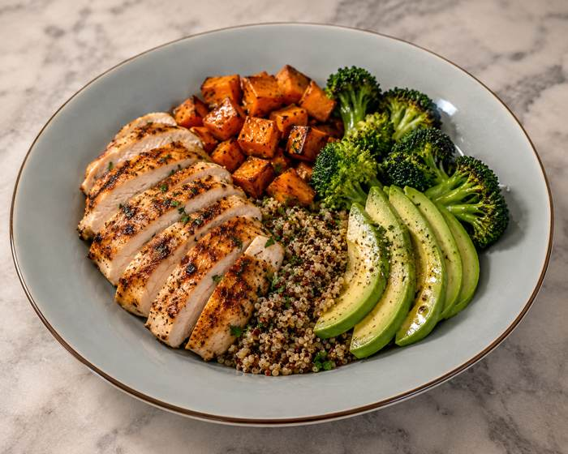
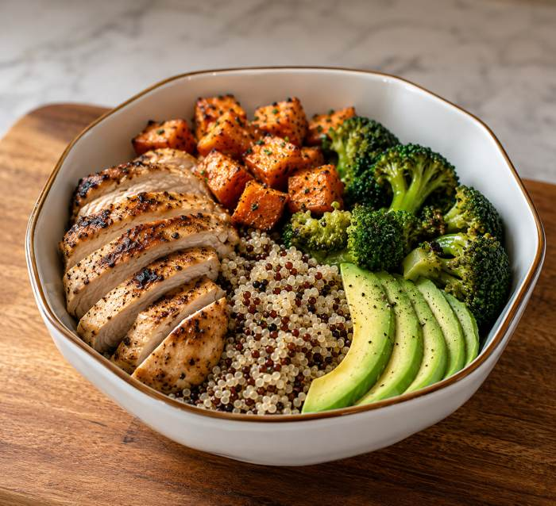

From the kitchen
Chicken sweet potato power bowls
A high-protein recovery bowl built for runners

How this bowl earned a permanent spot in my rotation
This one started as a "clean eating on a budget before a long run week" experiment, and it just never left. I make some version of it almost every month now, which for me is saying something, because my meal prep track record is genuinely embarrassing. But this bowl survived the test of actually getting eaten on repeat, which is the only review that matters.
It hits the three things I want after a hard effort: real protein, carbs that actually replace what I burned, and enough fat and flavor that it doesn't feel like punishment food. And I don't feel sluggish after I finish. No bland chicken breast staring back at me from a container. This one I look forward to.
Why it's good for runners
- 35–45g protein for muscle recovery
- Sweet potatoes replenish glycogen
- Healthy fats from avocado
- Lots of vitamins and potassium
Make it your own
Treat the ingredient list below as a starting point, not a rulebook. This bowl is forgiving:
- No sweet potatoes? Regular potatoes or even butternut squash roast up just fine in their place.
- Out of broccoli? Brussels sprouts, green beans, or asparagus all roast well alongside the sweet potatoes.
- Not a quinoa person? Brown rice or farro work here too, just adjust your cook time.
- Want it dairy-free? Skip the yogurt sauce and go with a squeeze of lime and a drizzle of olive oil instead.
Ingredients (4 servings)
- 2 large chicken breasts
- 2 large sweet potatoes, diced
- 1 cup quinoa (dry)
- 2 cups broccoli florets
- 1 avocado, sliced
- Olive oil, garlic powder, paprika, salt and pepper
Optional sauce
Don't skip this if you can help it. It takes about ninety seconds to stir together and it's the difference between "fine" and "actually excited for lunch."
- ¼ cup Greek yogurt
- Juice of half a lemon
- Garlic powder, black pepper
Instructions
- Roast sweet potatoes at 425°F for 25 minutes.
- Cook quinoa according to package directions.
- Season chicken with garlic powder, paprika, salt, and pepper.
- Grill or pan-sear chicken until cooked through.
- Steam broccoli.
- Assemble bowls with quinoa, sweet potatoes, broccoli, sliced chicken, and avocado.
A few things I've learned making this on repeat
- Line the pan. Parchment paper under the sweet potatoes means actual roasting instead of steaming in their own liquid, and way less scrubbing after.
- Don't overcrowd them. Give the sweet potato cubes room to breathe on the sheet pan or they'll go soft instead of getting those crispy edges.
- Cook once, eat four times. This holds up great in the fridge for 3-4 days. I keep the avocado separate and slice it fresh each time so it doesn't brown on me.
- Eat it warm or cold. Genuinely works either way, which makes it a solid grab-and-go option on busy weekday mornings before a run.
Per serving: 600 cal · 42g protein · 50g carbs · 20g fat

Real talk: I can run a 5K faster than I can plate a bowl of food. My kitchen lighting is criminal, so these photos got a little AI glow-up before hitting the page. The recipe, the bowls my mother gave me for my birthday, and the numbers are all real — I just haven't figured out how to get AI to shave time off my splits yet. Working on it.